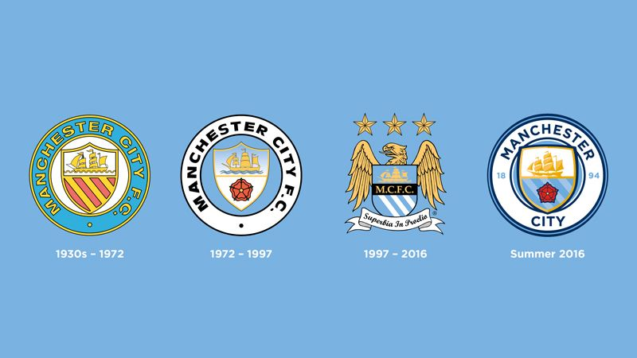

영국 잉글랜드 프리미어 리그 소속 프로 축구 클럽. 연고지는 맨체스터. 홈 구장은 에티하드 스타디움. 맨체스터의 이름을 가진 축구 팀은 그레이터맨체스터 주 안에 무수히 있지만 개중 그레이터맨체스터 주의 중심도시인 맨체스터 시를 연고로 하는 유일한 1부 리그 팀이라는 것이 특징이다. 맨체스터 유나이티드 FC는 그레이터 맨체스터 주의 트래포드(Trafford)가 연고지이고 볼턴 원더러스 FC, 위건 애슬레틱 FC는 그레이터 맨체스터 주의 볼턴과 위건에 속해있다. 자세한 사항은 맨체스터 항목 참조. 1880년 세인트 마크스라는 이름으로 창단하여 1887년 아드윅 AFC로 바꿨다가 1894년에 맨체스터 시티로 처음 시작하게 되었다.  구단주는 아랍 에미리트의 셰이크 만수르 빈 자예드 알 나얀이다. 법적으로는 그가 소유하고 있는 아부다비 유나이티드 그룹(ADUG)이 시티 풋볼 그룹의 대주주가 되고 시티 풋볼 그룹과 그 회장인 칼둔 알 무바라크가 그를 대신하여 구단을 지배하는 형태로 이루어져 있으나, 만수르가 투자청을 세운 이유는 맨시티를 인수하기 위해서이고 그 예하의 시티 풋볼 그룹은 맨시티 인수 이후 전 세계의 다른 구단들(뉴욕 시티 FC, 멜버른 시티 FC 등)과 함께 지배하기 위해서 생겨난 경영 구조일 뿐이므로 최종 결재권자는 여전히 만수르이다.